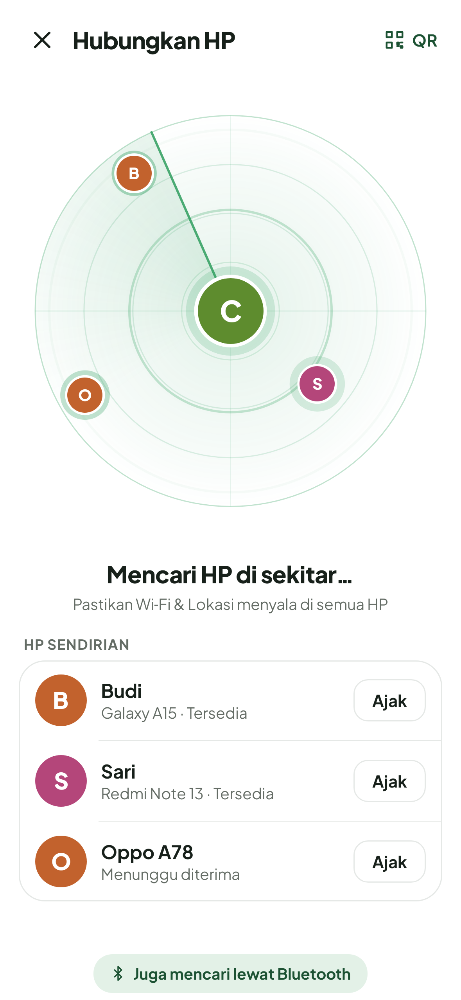
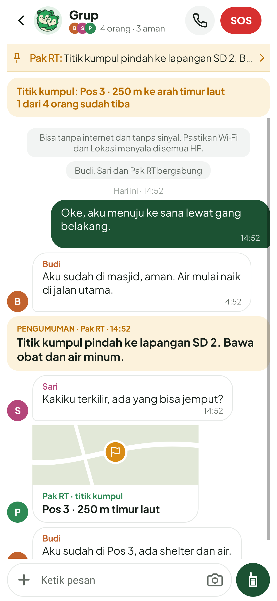
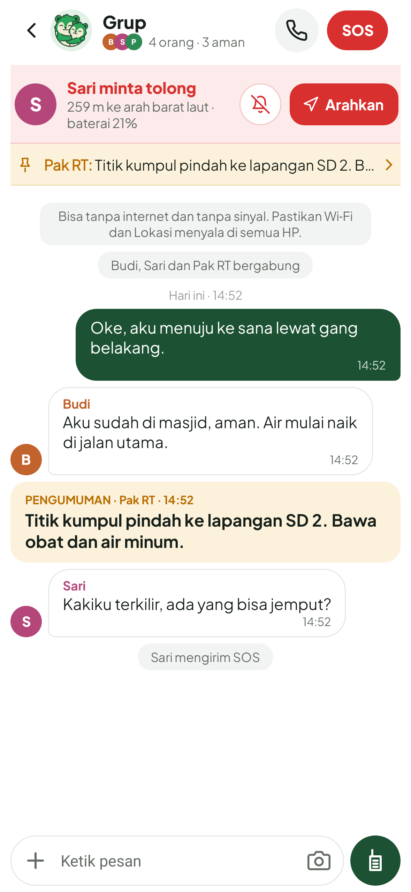
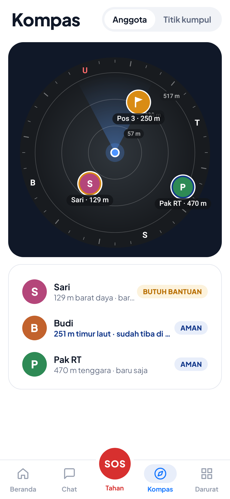

-
Listrik padam. Bar sinyal hilang.
Grup chat sepi, tapi HP masih menyala. Buka Saling Jaga, dan HP tetangga muncul di daftar dalam hitungan detik.

-
Budi tahan tombol, semua mendengar.
Walkie-talkie ke seluruh grup, atau chat kalau suasana terlalu bising. Pesan berpindah dari HP ke HP, tanpa server di tengah.

-
Pak RT memindahkan titik kumpul.
Satu pengumuman tampil di atas semua chat: Pos 3, 250 m ke timur laut. Setiap HP langsung tahu arah dan jaraknya.

-
Sari mengirim SOS.
Alarm berbunyi di semua HP, lengkap dengan jarak, arah, dan sisa baterainya: 259 m ke barat laut, baterai 21%.

-
Yang belum tiba, kelihatan.
Kompas menunjukkan posisi setiap anggota dan titik kumpul. Siapa yang sudah sampai, siapa yang masih di jalan.

Fitur
Semua fitur Saling Jaga.
Semuanya jalan tanpa internet dan tanpa pulsa. Tidak perlu hafal semuanya: yang paling sering dipakai cuma chat, tombol bicara, dan SOS.
Ngobrol & kabar
Seperti grup chat biasa, tapi tanpa internet.
- Walkie-talkieTahan tombol hijau untuk bicara ke seluruh grup. Lepas, semua mendengar.
- Chat grup & pesan pribadiKe semua orang, atau berdua saja.
- Telepon berduaKetuk ikon telepon di atas untuk ngobrol dua arah terus-menerus.
- Pesan suaraRekam sampai 1 menit kalau walkie-talkie lagi ramai.
- Foto & videoKirim foto atau klip video pendek ke grup.
- PengumumanInfo penting tampil sebagai kartu kuning di atas chat.
- Riwayat chatChat tetap ada setelah aplikasi ditutup, tersimpan di HP itu saja.
- Kirim file Edisi TimPDF dan dokumen sampai 8 MB.
Darurat
Untuk saat ada yang butuh tolong.
- SOSTekan SOS, lalu Kirim SOS. Alarm berbunyi di semua HP grup, lengkap dengan jarak, arah, dan sisa baterai pengirim.
- SOS lewat tombol volumeTekan tombol volume 5 kali dalam 3 detik saat aplikasi terbuka. Ada hitung mundur 5 detik untuk batal.
- SMS ke kontak daruratKalau nomornya sudah diisi, SMS ikut disiapkan saat SOS. Terkirim kalau masih ada sinyal.
- Menu DaruratEnam tombol besar: SOS, Status saya, Sirine & senter, Panduan, Peta, dan Kartu medis.
- Status sayaAman, Butuh bantuan, atau Terluka. Semua anggota langsung tahu.
- Sirine & senterSirine keras dan lampu berkedip kode SOS supaya mudah ditemukan.
- Kartu medisGolongan darah, alergi, dan obat. Kalau diizinkan, ringkasannya ikut terkirim bersama SOS.
Arah & lokasi
Tahu di mana teman-temanmu, tanpa Google Maps.
- KompasArah dan jarak ke tiap anggota, plus panah besar ke yang sedang SOS.
- Titik kumpulTandai tempat berkumpul. Semua HP tahu arah dan jaraknya.
- Peta offlineUnduh peta sekitar (±3 km) selagi ada internet, lalu buka kapan saja.
- Cari keluargaSebarkan nama dan ciri orang yang dicari ke semua HP, termasuk ke grup lain.
Rombongan & posko
Untuk ketua rombongan, RT, sekolah, dan relawan.
- Absen / hitung kepalaSetiap orang menjawab Aman, Butuh bantuan, atau Terluka. Yang belum menjawab kelihatan.
- Info grupStatus, baterai, dan lokasi terakhir tiap anggota dalam satu daftar.
- Mode lansiaLayar dengan tombol besar: SOS, Saya aman, dan Tahan untuk bicara.
- Laptop & iPhone lewat browserPerangkat tanpa aplikasi ikut grup lewat browser. Caranya.
- JembatanHP di tengah meneruskan pesan ke yang lebih jauh. Gratis untuk semua, masih percobaan.
- Gerbang LoRa & pengarah antena Edisi TimUntuk posko yang punya alat LoRa Meshtastic atau antena Wi‑Fi jarak jauh.
Persiapan
Supaya siap sebelum bencana datang.
- Panduan bencana & P3KGempa, banjir, longsor, listrik padam, RJP, dan luka bakar. Terbaca tanpa internet.
- Daftar siap siagaPengingat izin dan pengaturan yang perlu disiapkan, sampai semuanya beres.
- Mode hemat bateraiLokasi diperbarui lebih jarang dan layar diredupkan. Chat dan SOS tetap jalan.
- Sambung ulang otomatisHP yang sempat keluar jangkauan masuk lagi ke grup sendiri.
- Bahasa Indonesia & EnglishIkut bahasa HP, bisa diganti di Profil.
Fitur bertanda Edisi Tim dinyalakan di Profil → Lanjutan, dan gratis selama masa uji coba.
Jangkauan
Dari satu gang sampai satu lembah.
Mulai dari dua HP saja. Kalau rombongan menyebar, jangkauannya bisa ditambah bertahap.
50–100m
HP ke HP
Langsung lewat Wi‑Fi Direct di tempat terbuka. Lebih pendek di dalam gedung.
+1HP
HP jembatan
Satu HP di tengah ketuk Jadi jembatan dan meneruskan pesan ke yang di luar jangkauan.
1–3km
Wi‑Fi posko
Wi‑Fi gedung, atau antena Wi‑Fi jarak jauh di posko.
km+LoRa
Gerbang LoRa
Alat LoRa Meshtastic meneruskan pesan singkat dan SOS antar kelompok.
Angka di atas perkiraan di tempat terbuka. Hasil nyata tergantung HP, gedung, pepohonan, dan cuaca.
Keamanan
Tanpa server, data tetap di grup.
Terenkripsi antar HP
Pesan disegel AES‑256‑GCM. Tidak ada server dan tidak ada akun.
Tidak bisa menyamar
Pesan yang mengaku dari anggota lain ditolak.
Lolos Play Protect
Dipindai Google saat dipasang. Tanpa iklan, analitik, atau pelacak.
Bisa dicek keasliannya
Tiap APK disertai SHA-256 untuk dicocokkan dengan file unduhan.
Izin apa saja yang diminta?
| Lokasi / Perangkat sekitar | Wajib dari Android untuk mencari HP lewat Wi‑Fi Direct, juga untuk kompas dan jarak SOS |
| Mikrofon | Hanya saat tombol bicara ditahan atau mode telepon aktif |
| Notifikasi | SOS dan pesan saat layar mati |
| Tidak diminta | Kontak, SMS, galeri penuh, log panggilan |
Detail teknis dan batasannya ada di README di GitHub.
Contoh · satu malam tanpa sinyal
Begini rasanya saat BTS ikut padam.
Pasang sekarang, sebelum dibutuhkan.
Android bisa dipasang hari ini. iPhone dan laptop ikut lewat browser.